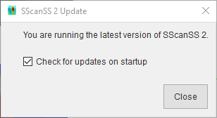

General Overview¶
SScanSS 2 can be installed by the downloading the appropriate installer for your operating system and following the instructions in the installation wizard or associated readme files. This section provides information on starting, closing and updating SScanSS 2
Starting SScanSS 2¶
SScanSS 2 can be opened via shortcuts or from the command line in both the Windows and Linux operating system.
Note
It is possible to open multiple instances of the software at once so avoid unnecessary clicks on shortcuts.
Windows¶
SScanSS 2 can be run by navigating to the bin folder in the installation directory and double clicking on sscanss.exe.
To open SScanSS 2 from the start menu, do the following:
Press the Start button.
Search for or Scroll down to SScanSS 2.
Click SScanSS 2.
Linux¶
SScanSS 2 can be run by navigating to the bin folder in the installation directory and right click on the sscanss executable and select run from the context menu.
To run SScanSS 2 from the terminal, do the following:
Open the Terminal
Type sscanss2 and press enter.
Exiting SScanSS 2¶
SScanSS 2 can be closed by clicking the “File > Exit” on the main menu in the software. If the current SScanSS 2 Project has been modified, a message pops up to prompt saving the Project. Press the Save button to specify saving the Project, the Discard button to specify not saving the Project, or Cancel to abort the operation and return to the software.
Tip
You can also use ALT + F4 shortcut to close the software on windows and most Linux variants.
Updating SScanSS 2¶
SScanSS 2 automatically checks for updates when the software is opened. To change this behaviour, do the following:
Click Edit > Preferences in the main menu to open the preference dialog.
In the General section, uncheck the Check for updates on startup checkbox.
Tip
You can also change the update behaviour from the update dialog by clicking Help > Check for Update in the main menu and uncheck the Check for updates on startup checkbox.
After an update check, the software will notify the user if a new release is available and provide a hyperlink to download the installer for the new version.
{kind=link}